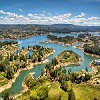

London is the capital of England. It is the most populous city in the United Kingdom, with a metropolitan area of over 13 million inhabitants.Standing on the River Thames, London has been a major settlement for two millennia, its history going back to its founding by the Romans, who named it Londinium.23 and 24 Leinster Gardens in Paddington are dummy houses built to hide the Tube line running underneath (the Metropolitan). The windows are painted on, and behind the façade is a track. |
| Paris is the capital and most populous city of France.Situated on the Seine River, also known as the région parisienne. | Tokyo is the capital of Japan, the center of the Greater Tokyo Area, and the most populous metropolitan area in the world. | ||
| By Ackerley-9 hours ago | By Hamelstun-10 hours ago | ||
|  | Colombia is a country at the northern tip of South America. It's landscape is marked by rainforests, Andes mountains and numerous coffee plantations. | Malaysia is a Southeast Asian country occupying parts of the Malay Peninsula and the island of Borneo. | |
| By Candyce-13 hours ago | By Nancey-10 hours ago | ||